| Shape | Known No-Touch Numbers | Unknown |
|---|---|---|
 | 16, 18, 22+ | |
| 5+ | ||
 | 14+ | |
| 34, 44 | 28-33, 35-43, 45+ | |
 | 16, 18, 21+ | |
| 16, 18-20, 22+ | ||
| 15, 16, 18+ | ||
| 7, 10-46 | 47+ | |
| 23+ | ||
| none | ||
| 7, 10, 11, 13+ | ||
| 19, 24, 25, 27-30 | 31+ | |
| 17, 18, 20 | 21+ | |
| 7, 10, 13-24 | 25+ | |
| 19 | 20+ |
| 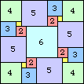 n=16 (Karl Scherer) | 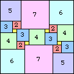 n=18 (Patrick Hamlyn) | 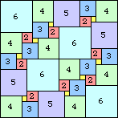 n=22 (Patrick Hamlyn) | 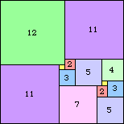 n=23 (Karl Scherer) | 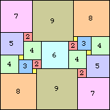 n=24 (Patrick Hamlyn) |
| 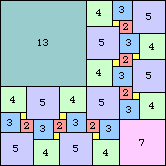 n=25 (Karl Scherer) | 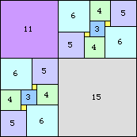 n=26 (Karl Scherer) | 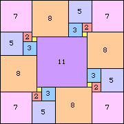 n=27 (Karl Scherer) | 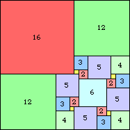 n=28 (Karl Scherer) |
This month we ask which other reptiles have no-touch tilings, and for those that do, what are their no-touch numbers?
Can you show that equilateral triangles and cubes do not have no-touch tilings? Can you find a no-touch tiling of a bent triomino? Can you show that that dominoes have no-touch tilings for n≥5? What are the no-touch numbers of other rectangles? Other polyominoes? Polyiamond or polytan trapezoids? Other shapes?
We continue the recent tradition of offering a $10 prize to solver offering the best solutions.
Tino Jonker noted that all integer-sided right triangles have non-touch tilings, because the altitude to the hypotenuse divides the triangle into two similar triangles. He was also able to prove that almost all tritans have no-touch tilings.
| Shape | Known No-Touch Numbers | Unknown |
|---|---|---|
| 16, 18, 22+ | |
| 5+ | ||
| 14+ | |
| 34, 44 | 28-33, 35-43, 45+ | |
| 16, 18, 21+ | |
| 16, 18-20, 22+ | ||
| 15, 16, 18+ | ||
| 7, 10-46 | 47+ | |
| 23+ | ||
| none | ||
| 7, 10, 11, 13+ | ||
| 19, 24, 25, 27-30 | 31+ | |
| 17, 18, 20 | 21+ | |
| 7, 10, 13-24 | 25+ | |
| 19 | 20+ |
Here are 1×2 rectangle no-touch tilings that do not come from square or smaller tilings:
| 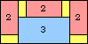 n=5 | 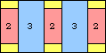 n=6 | 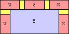 n=7 | 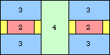 n=8 |
| 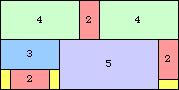 n=9 | 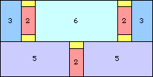 n=11 | 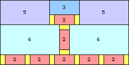 n=13 |
| 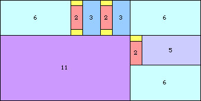 n=17 | 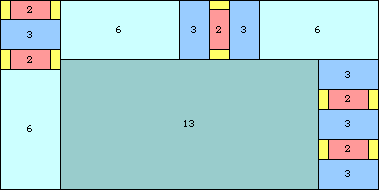 n=19 |
Here are 1×3 rectangle no-touch tilings that do not come from square tilings:
| 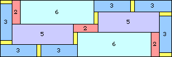 n=14 (Patrick Hamlyn) | 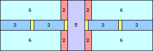 n=15 |
| 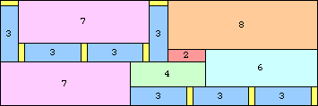 n=17 (Patrick Hamlyn) | 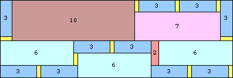 n=19 (Patrick Hamlyn) |
| 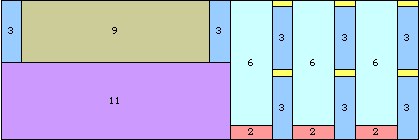 n=20 | 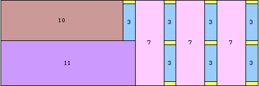 n=21 |
Here are 1×4 and 1×5 rectangle no-touch tilings that do not come from square tilings:
| 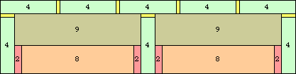 n=21 (Patrick Hamlyn) |
| 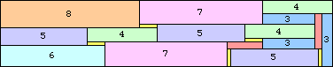 n=19 (Patrick Hamlyn) | 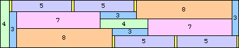 n=20 (Patrick Hamlyn) |
Here are 2×3 rectangle no-touch tilings that do not come from square tilings:
| 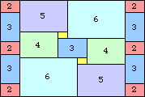 n=15 (Patrick Hamlyn) | 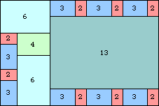 n=19 (Patrick Hamlyn) |
| 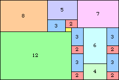 n=20 (Patrick Hamlyn) | 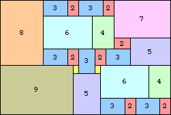 n=21 (Patrick Hamlyn) |
Here are small bent triomino no-touch tilings:
| 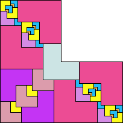 n=34 (Patrick Hamlyn) | 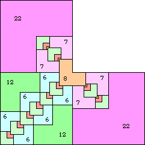 n=44 |
Here are small tritan no-touch tilings that do not come from smaller tilings:
| 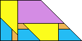 n=7 (Patrick Hamlyn) |  n=10 (Patrick Hamlyn) | 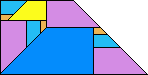 n=11 (Patrick Hamlyn) | 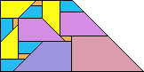 n=12 (Patrick Hamlyn) |
 n=13 (Patrick Hamlyn) |  n=15 (Patrick Hamlyn) | 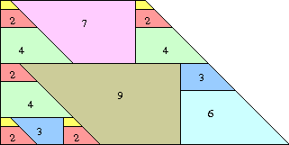 n=16 (Joseph DeVincentis) |
| 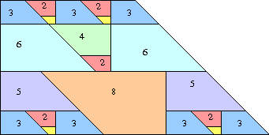 n=17 (Joseph DeVincentis) | 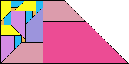 n=18 (Patrick Hamlyn) |
| 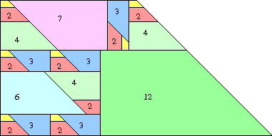 n=19 (Joseph DeVincentis) | 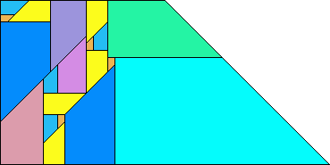 n=23 (Patrick Hamlyn) |
| 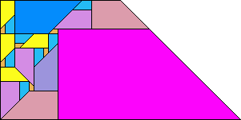 n=25 (Patrick Hamlyn) | 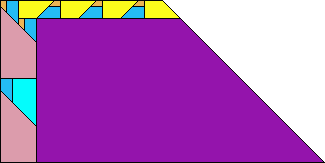 n=27 (Patrick Hamlyn) |
| 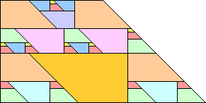 n=29 (Joseph DeVincentis) | 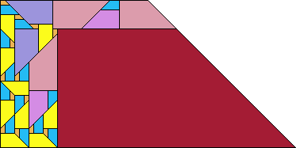 n=31 (Patrick Hamlyn) |
| 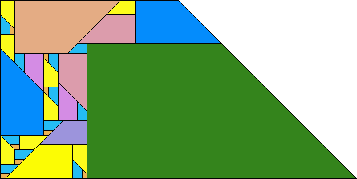 n=37 (Patrick Hamlyn) |
| 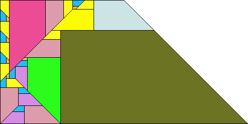 n=41 (Patrick Hamlyn) |
 n=43 (Patrick Hamlyn) |
Here are small triamond no-touch tilings that do not come from smaller tilings:
| 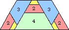 n=7 (Patrick Hamlyn) | 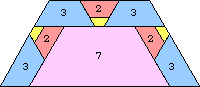 n=10 | 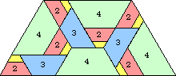 n=11 (Patrick Hamlyn) | n=13 |
n=15 | n=16 |
n=17 | n=18 |
n=19 | n=22 |
Here are small straight pentiamond no-touch tilings:
n=19 (Patrick Hamlyn) | n=24 (Patrick Hamlyn) |
n=25 (Patrick Hamlyn) |
n=27 (Patrick Hamlyn) |
n=28 (Patrick Hamlyn) |
n=29 (Patrick Hamlyn) |
n=30 (Patrick Hamlyn) |
Here are small octiamond no-touch tilings:
n=17 (Patrick Hamlyn) | n=18 (Patrick Hamlyn) |
n=20 (Patrick Hamlyn) |
Here are small tridrafter no-touch tilings:
n=7 (Patrick Hamlyn) | n=10 (Patrick Hamlyn) | n=13 (Patrick Hamlyn) | n=15 (Patrick Hamlyn) | n=16 (Patrick Hamlyn) |
n=17 (Patrick Hamlyn) |  n=18 (Patrick Hamlyn) | n=19 (Patrick Hamlyn) |
n=22 (Patrick Hamlyn) | n=23 (Patrick Hamlyn) | n=24 (Patrick Hamlyn) |
Here are small pentadrafter no-touch tilings:
n=19 (Patrick Hamlyn) |
And the winner of the $10 prize is Patrick Hamlyn.
If you can extend any of these results, please e-mail me. Click here to go back to Math Magic. Last updated 7/30/05.